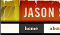

Site of the Month

Monday March 1st, 2004
The second month of the Web Standards Awards, and controversy abounds. The monthly judges were evenly split into two camps, requiring us to invoke our emergency tie breaking procedures. So, after the dust of two rounds of thumb wrestling had settled, only one site stood victorious: jasonsantamaria.com. Condolences go to Adaptive Path for a close second; you guys should already know how good you are.
More...
Reviewed by Johan Edlund :: Comments (24)
Latest WSA Winners
Tuesday April 13th, 2004
The Icelandic language must be a designers dream. Just take a look at the beautiful headers for Radio Reykjavik. You'd be forgiven for thinking that “FORSÍÐA” (frontpage) is an image even though it's just plain old text. Very old text in fact:
“Resistance to change is one of the characteristics of the Icelandic language, which explains the fact that a twelfth-century text is still easy to read for a modern Icelander. However, Icelandic has undergone considerable change in its phonetics. Another characteristic of the language is its uniformity, i.e. absence of dialects.”
Source: NAT
Could this “resistance to change” be the reason for the spelling of “rokk'n'roll”? Not even Lemmy of Motörhead could come up with such a great spelling!
Radio Reykjavik is developed by Andri Sigurðsson and his own personal portfolio is another great site.
Reviewed by Johan Edlund :: Comments (5)
Friday April 9th, 2004
"What Do I know" is the beautiful personal site of designer Todd Dominey. Todd's site was one of the first CSS sites I came across that really inspired me. The design is clean, simple and understated. The typographic elements combine with the layout and colour scheme to invoke — in my mind — the image of an elegant, Victorian era periodical. This site is about great content, and the design and typography do everything in their power to make reading this site a joy.
Reviewed by Andy Budd :: Comments (8)
Friday April 9th, 2004
I'm not in the habit of awarding weblogs, but I couldn't pass this one up. Recently re-designed, Sam Royama's weblog on design is beautifully rendered.
Great header images, menu elements, those lovely tabs and even style switching give the site real visual impact; a style all its own. This is on top of the great content that Sam also puts up.
A couple of tips: the code could be a bit more semantic, and anchor tags should be separated by more than whitespace.
Reviewed by Cameron Adams :: Comments (2)